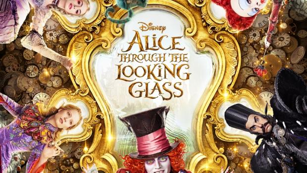

News FLORA !!
ALICE THROUGH THE LOOKING GLASS
Alice de l'autre côté du miroir (Alice Through the Looking Glass) est un film américain réalisé par James Bobin, sortie en juin 2016. Il fait suite au film Alice au pays des merveilles réalisé par Tim Burton en 2010. Bien que ce second opus ne soit pas réalisé par Tim Burton, ce dernier est chargé de sa production.
Le film s'inspire du livre De l'autre côté du miroir (Through the Looking-Glass, and What Alice Found There) écrit par Lewis Caroll en 1872, qui fait lui-même suite au livre Les Aventures d'Alice au pays des merveilles, du même auteur, écrit en 18651.
Le livre de la jungle
Chers amis du style,
On en deviendrait presque maboule. Pourquoi, sur les 2000 personnes qui ont trimé pendant 3 ans sur ce Livre de la Jungle, personne n'a-t-il lever le doigt en AG pour proposer d'encanailler le film ? Quelque chose comme : "Les mecs, quitte à faire croire, grâce à nos ordis de dingues, qu’un réalisateur de blockbusters portant un bouc (John Favreau, ndlr) est tombé sur des animaux sauvages tellement cools qu’ils ont tous accepté d’apprendre le français pour tourner un film sans sexe avec un singe géant qui chante comme Eddy Mitchell, ne pensez-vous pas qu’on devrait injecter un peu de fun dans le tas ? Non ? Vraiment pas ? Même pas un éléphant qui pète ? Bon, ok, c’est vous qui voyez."
Qu’elle soit située en France ou en Inde, comme son nom l’indique très clairement, la "Jungle" est un endroit assez tendu où l’on ne ricane pas. Si on savait mieux se préoccuper les uns des autres, sans doute un Américain à bouc n’aurait pas eu besoin, pour nous l'enseigner, de braver tous les dangers afin de convaincre des animaux hyper féroces de tourner dans un film pour enfants. Grâce à Dieu le tournage s’est bien passé, aucun être vivant apparaissant à l’écran n’a été blessé.
En revanche, on a frôlé l'embrouille à la sortie, sur le trottoir, quand une nana sinistre s’est rapprochée de la fille avec qui on discutait pour dézinguer le film. En mode analyse critique.
Manifestement, un mec avec un bouc qui réussit à embobiner 300 gnous, 20 éléphants, 10 rats sauteur, des centaines de singes et d’abeilles, un porc-épic, un gros serpent, un tigre borgne et un ours qui chante, ne lui suffisait pas. La nana, elle voulait sans doute ramener son grain de sel et dire que les animaux devraient arrêter de veiller les uns sur les autres, pour mieux refléter le monde dans lequel on vit. Normal.
Source : Le Gorafi
News MAXIME !!
Warcraft,le commencement : Il ne sera question que de cinéma ici, ce qui tombe bien, puisque Warcraft, le commencement, est un vrai film. De genre, bien sûr, de haute technologie, naturellement. Et – presque – d’auteur, puisque réalisé par Duncan Jones à qui l’on doit deux longs métrages de science-fiction si astucieux qu’ils en étaient hypnotisants : Moon, avec Sam Rockwell et Source Code, avec Jake Gyllenhaal. Le genre d’abord : l’heroic fantasy, qui s’inspire des cycles médiévaux pour fouetter les sens d’amateurs que la sagesse populaire décrit généralement comme l’exacte antithèse des héros musclés qu’ils admirent. Ses règles sont ici religieusement respectées. Venus d’une autre dimension, les orques emmenés par un guerrier qui a viré sorcier envahissent le royaume humain d’Azeroth. Celui-ci compte sur un vaillant chevalier, Anduin Lothar (l’onomastique doit beaucoup à Tolkien), un roi juvénile, et un magicien qui n’est peut-être pas digne de la confiance que le bon peuple d’Azeroth place en lui. Une idée du déracinement En face, les orques sont divisés entre les partisans du chef-sorcier et ceux qui préfèrent une guerre plus organique, qui ne nécessite pas le recours à la magie noire, les masses d’armes et les glaives suffisant amplement à massacrer. C’est là qu’il faut parler de la technologie ici à l’œuvre. Les humains assaillis sont interprétés par des acteurs, de valeur inégale (on découvrira au passage, dans le rôle de la reine, Ruth Negga, que l’on verra bientôt dans Loving, de Jeff Nichols), et curieusement, les personnages les plus attachants, les plus complexes, sont les orques. Ceux-ci sont aussi habités par des acteurs, mais leur physionomie (trois mètres de haut, canines inférieures protubérantes, teint qui varie de terre de sienne à vert marécageux) est tout à fait numérique. Le scénario plutôt habile, qui en fait des exilés privés de tout espoir de retour, tout en établissant entre eux une échelle de valeur différente de celle des humains, rend leur univers infiniment plus intéressant que la version édulcorée de la Terre du milieu dans laquelle se meuvent leurs adversaires. C’est dans cette idée de déracinement, qui animait les précédents films de Duncan Jones, qu’on reconnaît la patte de l’auteur. Une volonté d’invention Enfin, on sent que les leçons de « Game of Thrones » ont été assimilées. Certes, Warcraft ne baigne pas dans le stupre (au contraire), mais la moyenne de l’espérance de vie des personnages, y compris les principaux, est soumise à de très brutales variations, qui maintiennent l’intérêt pour une intrigue par ailleurs assez prévisible. Cette volonté d’invention, à l’intérieur des limites du genre, ne s’est pas communiquée à l’apparence du film. Peut-être parce qu’il fallait rester fidèle à l’univers visuel du film, les prodiges de technologie ici déployés (rarement la coexistence entre créatures de chair et de pixel aura été aussi harmonieuse, même si les personnages s’entretuent) servent à construire des citadelles, à faire surgir des chaînes de montagnes qui feraient passer les décors du Seigneur des Anneaux ou du Hobbit pour des prodiges de bon goût. Comme son titre l’indique, Warcraft, le commencement, pourrait devenir une très longue saga : le film s’achève sur le sauvetage d’un Moïse orque, dérivant dans son berceau au gré des flots. On attend la suite sans crainte, mais sans hâte. Maxime Lanvin .
Source : Le Gorafi
News SEBASTIEN !!

Date de sortie 30 mars 2016 (1h 35min)
De Jennifer Yuh, Alessandro Carloni
Avec Manu Payet, Pierre Arditi, Alison Wheeler plus
Genres Animation, Aventure, Comédie
Nationalités Américain, Chinois